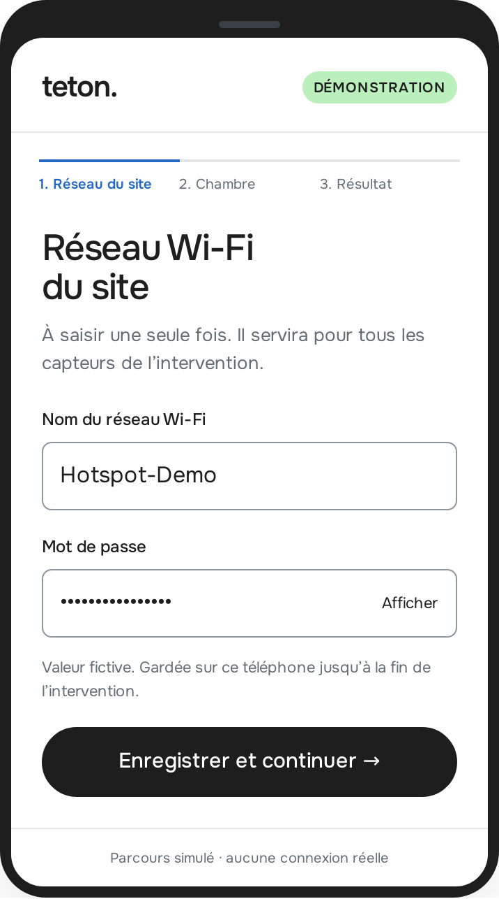
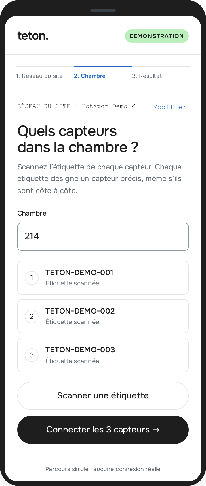
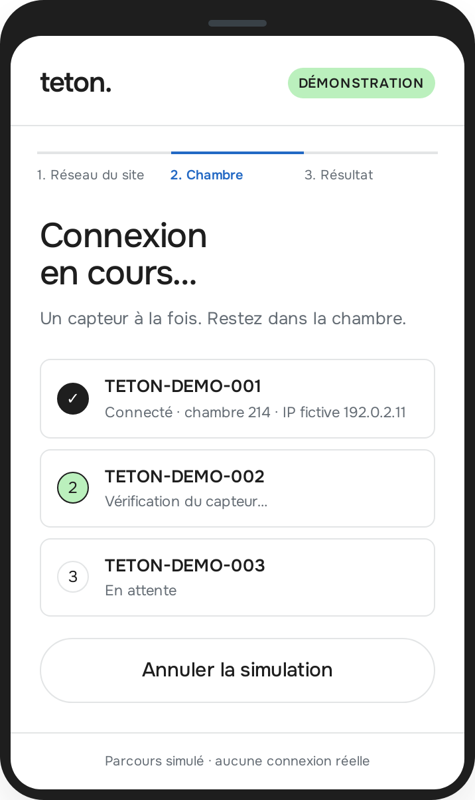
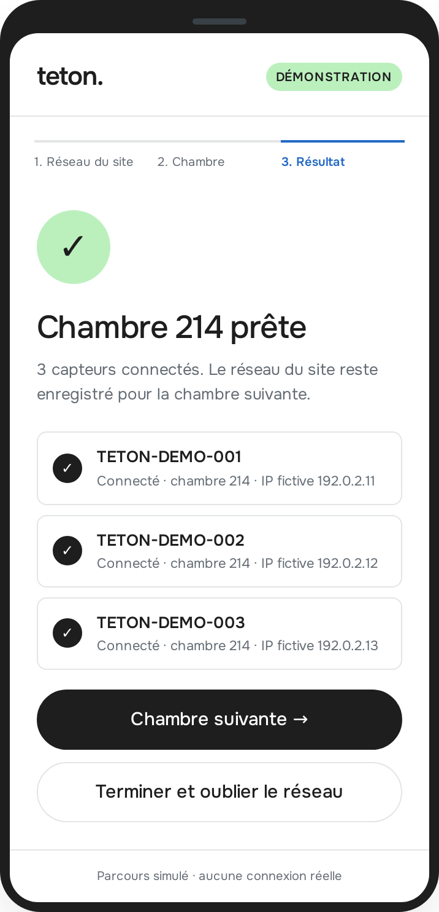
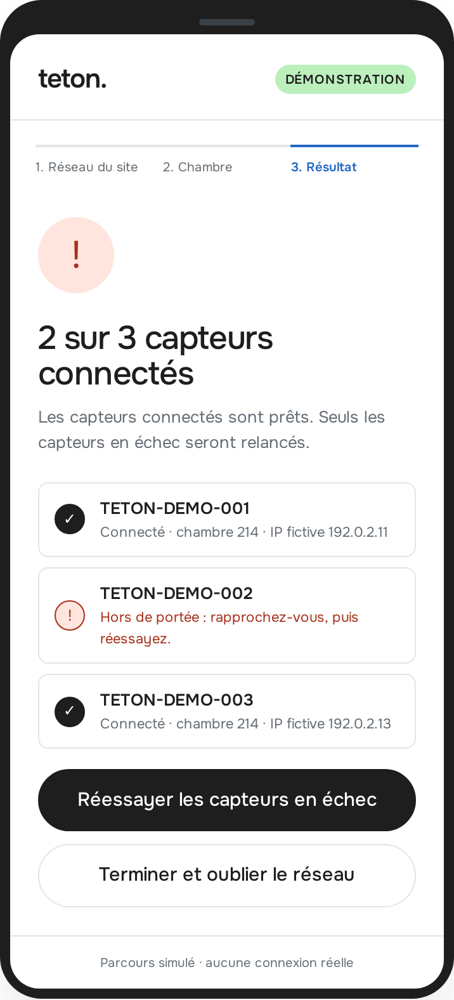
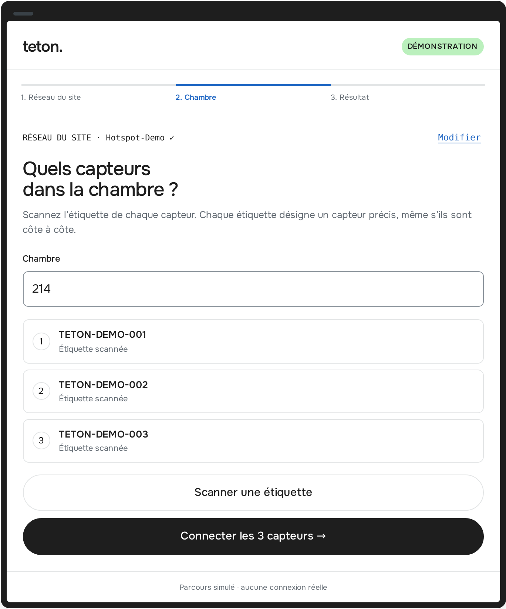

Défi technique IoT · Plateforme · Rapport de solution
Un technicien transmet les identifiants Wi-Fi à un appareil Ubuntu sans écran, depuis son téléphone et par Bluetooth Low Energy, sans Internet ni réseau commun. L'appareil rejoint ensuite le réseau du site. Ce rapport décrit la solution retenue, ce qui est construit et prouvé, et ce qui reste à faire.
hello → world en GATT, annonce réelle vérifiée sur l'hôte.Le défi n'est pas encore complet. Aucune preuve ne montre des identifiants transmis ni une connexion Wi-Fi réelle. Les résultats simulés sont étiquetés comme tels et ne valident aucune étape matérielle.
1 · Contraintes
Le défi impose quatre contraintes. Pour chacune, le tableau donne la réponse retenue et l'état réel des preuves au 18 octobre 2026. « Code prêt » ne veut pas dire « prouvé sur la radio ».
| Contrainte du défi | Réponse retenue | État |
|---|---|---|
| Pas d'Internet, pas de réseau local partagé au départ | BLE direct entre le téléphone et l'appareil. Application préparée avant l'intervention, ressources hors ligne. Aucun point d'accès temporaire. | Annonce réelle OK, téléphone à tester |
| Connexion à un vrai réseau Wi-Fi | Le service active le profil via NetworkManager par D-Bus, puis renvoie l'état frais de cette connexion et son IP. | Non commencé |
| Pas d'identifiants en clair dans l'air | Canal applicatif Noise NKpsk2 : la clé publique de l'appareil et un secret sont imprimés sur son étiquette QR. | Conçu et revu |
| Utilisable par un non-développeur | Réseau du site saisi une seule fois. Ensuite, chambre par chambre : scanner les étiquettes des capteurs, un bouton, un statut par capteur et des relances ciblées. Rien à taper sur l'appareil. | Maquette testée |
2 · Canal
| Canal | Sans réseau partagé | Android et iPhone | Non-développeur | Verdict |
|---|---|---|---|---|
| BLE GATT | Oui | Oui, avec une app préparée | Oui : scanner, toucher | Retenu |
| Point d'accès temporaire (SoftAP) | Ambigu : crée un réseau local | Oui, sans app | Oui | Écarté |
| QR affiché par l'appareil | Oui | Oui | Oui | Pas d'écran |
| NFC | Oui | Selon le téléphone | Oui | Pas de lecteur |
| Câble USB | Oui | Adaptateurs variables | Non | Écarté |
3 · Architecture
Le service Rust iot-device parle à BlueZ, et plus tard à NetworkManager, uniquement par D-Bus. Aucun mot de passe ne passe en argument de processus. Le gestionnaire partagé protocol::respond ne connaît ni le Bluetooth ni le Wi-Fi : il reçoit des octets et renvoie des octets. systemd démarre le service au boot, sans écran ni SSH.
| Fichier | Rôle | État |
|---|---|---|
src/protocol.rs | Contrat partagé : hello → world, UUID du service et de la caractéristique | Testé |
device/main.rs | Périphérique BLE sur BlueZ via bluer 0.17.4, feature optionnelle ble | 6 tests unitaires, radio non testée |
device/systemd/iot-device.service | Démarrage au boot, utilisateur dynamique, suit BlueZ | Écrit, non installé |
device/audit.rs | Pré-vol de l'hôte en lecture seule, délais bornés | Hôte réel : 4/4 |
src/simulation.rs, batch.rs | Transport simulé, pannes injectées, lots bornés | Testé, mesuré |
docs/architecture-demo.html | Maquette de l'interface technicien, hors ligne | 91 contrôles Playwright |
configurator/ | Application Android et iPhone | Absente : framework non choisi |
4 · Premier jalon
Avant tout identifiant, l'appareil expose un service GATT inoffensif : une caractéristique en écriture acquittée et en lecture. Il garde une seule réponse en attente, liée au client qui a écrit. Toute écriture vide d'abord ce slot ; une lecture rend world une fois, et seulement à ce client.
NotSupported. Offset non nul : refus InvalidOffset. Le journal ne contient jamais le contenu écrit ni l'adresse du téléphone.6 tests unitaires sur la logique du slot. 4 mutations du code (contrôle du client, vidage, offsets) font chacune échouer un test.
Approuvée après un correctif : trois mutations passaient les premiers tests. Taille d'annonce et droits D-Bus vérifiés.
Sur l'hôte, BlueZ confirme l'adaptateur allumé, une annonce active et le service publié ; tout est libéré à l'arrêt. Aucun téléphone ne l'a encore vu.
5 · Sécurité
L'appareil n'a ni écran ni clavier, et le même parcours doit marcher sur Android et sur iPhone. Le pairing Bluetooth natif ne peut donc pas authentifier l'appareil de façon fiable. Nous recommandons un canal chiffré au niveau de l'application. Cette partie est conçue et revue, mais pas construite.
| Option | Raison | Verdict |
|---|---|---|
| Pairing BLE « Just Works » | Chiffre le lien mais n'authentifie personne : un intermédiaire actif gagne. | Rejeté |
| Code fixe imprimé (passkey) | Un attaquant actif le retrouve en une vingtaine de tentatives (CVE-2020-26558). | Rejeté |
| Pairing OOB avec la clé du QR | Indisponible pour les apps iOS ; API système hors SDK public sur Android. | Rejeté |
Noise NKpsk2, clé et secret dans le QR | Fonctionne en GATT simple sur les deux plateformes. L'appareil prouve sa clé, le téléphone prouve qu'il a lu l'étiquette. Aucune boîte de dialogue système. | Recommandé |
| SRP6a avec secret d'étiquette (modèle ESP-IDF) | Précédent éprouvé en provisioning BLE ; pile SRP moins courante côté appareil. | Alternative |
Noise_NKpsk2_25519_ChaChaPoly_SHA256, avec la bibliothèque Rust snow 0.10. Rien de secret avant la fin de l'échange.Risque accepté pour la démo. Une étiquette QR falsifiée, collée sur la vraie, n'est pas détectée. Pour un déploiement réel, le téléphone vérifiera la clé dans une liste d'appareils signée par Smith. Détails et tests obligatoires : docs/SECURITY.md.
6 · Interface
Une chambre compte souvent plusieurs capteurs. Le technicien saisit le réseau du site une seule fois, puis, dans chaque chambre, scanne les étiquettes et connecte tous les capteurs d'un geste. La maquette est aux couleurs de example.com et ses actions sont simulées. Captures Playwright en émulation iPhone 13.






| Contrôle Playwright | Résultat |
|---|---|
| 5 scénarios × 2 aperçus × 3 formats, avec correction | 54 réussis |
| Chambre suivante sans ressaisir le mot de passe | 6 réussis |
| Pas de défilement horizontal, police chargée, aucune erreur console ni CSP | 15 réussis |
| Cibles tactiles d'au moins 44 px | 6 réussis |
| Accessibilité axe-core, WCAG 2.1 AA, 3 écrans × 3 formats | 0 violation |
| Parcours complet au clavier, focus sur chaque titre d'écran | Réussi |
7 · Passage à l'échelle
Les mesures de simulation (lots de 1 000 tâches) valident la logique du logiciel, pas la capacité radio. Voici ce qui changerait pour une équipe d'installation non technique.
200 annonces dans un couloir : filtrer par UUID et par identifiant du QR, et ne jamais choisir par la seule force du signal.
Chaque tentative a un identifiant. Après une coupure, l'app interroge l'appareil au lieu de renvoyer le mot de passe.
Provisioning à usage unique ; un reprovisioning demande un jeton signé. Aucune fenêtre ne se rouvre au redémarrage.
8 · Preuves
| Classe | État | Contenu | Fichier |
|---|---|---|---|
| SIMULATION | Réussi | Transport simulé, pannes, soak de 300 s ; maquette testée par Playwright | demo/benchmark*.txt, demo/mockup-playwright.txt |
| COMMAND_FIXTURE | Réussi | 46 tests Rust, mutations du service BLE, 4 cas CLI | demo/tdd-ble-device.txt |
| ACTUAL_HOST | Réussi 4/4 | Adaptateur allumé, annonce et service publiés puis libérés à l'arrêt | demo/host-ble-endpoint.txt, demo/host-inventory.txt |
| ACTUAL_BLE | Non exécuté | Échange avec Android et iPhone | — |
| Canal sécurisé | Non exécuté | Conçu et revu, pas codé | docs/SECURITY.md |
| ACTUAL_WIFI | Non exécuté | Connexion réelle au réseau cible | — |
sudo apt install libdbus-1-dev pkg-config rustup toolchain install 1.88.0 --profile minimal --component rustfmt --component clippy cargo test --all-targets --features ble --locked cargo build --release --features ble --bin device --locked sudo rfkill unblock bluetooth # si « Soft blocked: yes » ./target/release/audit-host && ./target/release/device # Téléphone (nRF Connect) : se connecter à IOT-DEMO-001, écrire « hello », lire « world »